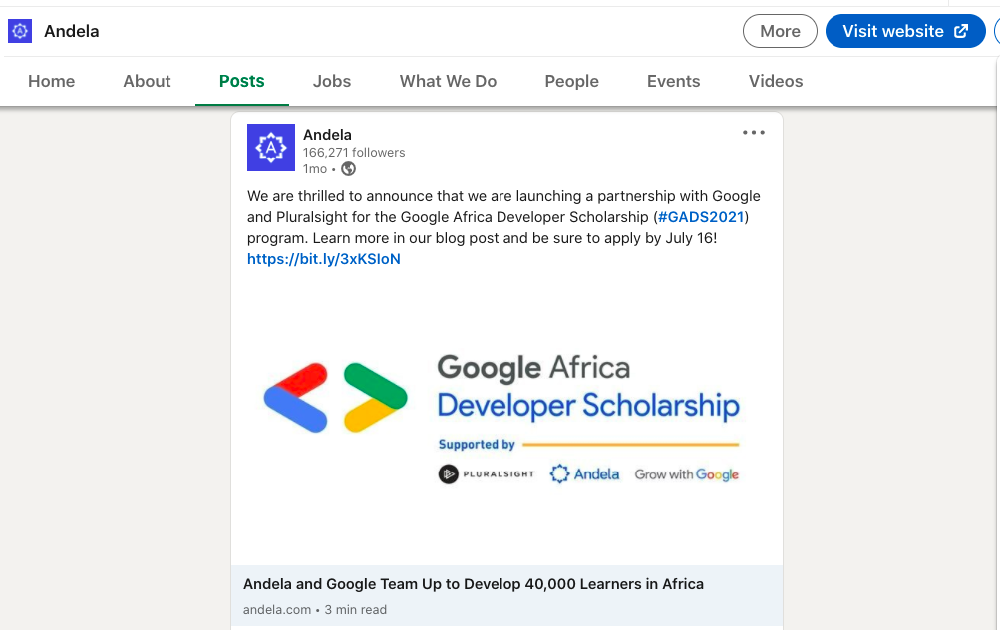
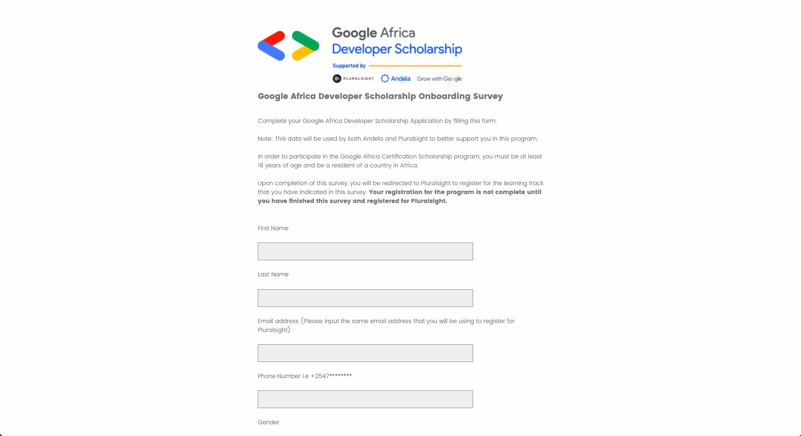

9 Aug 2021
Let's begin...
It was on 2nd of July 2021. As I was going through my linkedIn account's post, I came past an Andela linkedIn account post. The post stated Andela's partnership with Google and Pluralsight for a program called Google Africa Developer Scholarship. I clicked the post's link which took me to a page which had all the information about the program and a also a link to apply.
I clicked the application link and it took me to a Pluralsight page where I registered for a pluralsight account and took a Google Africa Developer Scholarship Onboarding Survey where you choose the path you desire and give out information about yourself.
After taking the survey, I believe I was taken to pluralsight where I was told to choose between scoring 100+ in Web Development skill IQ and learning 10+ hours Mobile Web Speialist - Foundations Channel content to advance to Learning Phase 1. I scored 199 in the skill IQ which meant that I was proficient. Which also meant that I was to advance to Learning Phase 1.
On Thursday, July 15 2021, I received a congratulatory email from Andela which stated that I advanced to Learning Phase 1. Which meant that I was now accepted to the Mobile Web Speialist path.
As I am writing this, I have now completed 76% of Learning Phase 1 material. I have to admit something. I have never seen a better laid out course than this. I have enjoyed every single module.